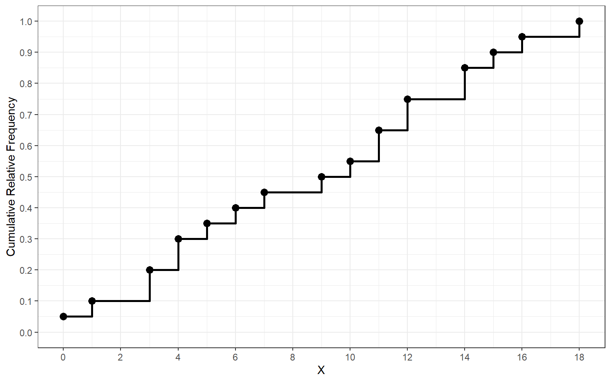
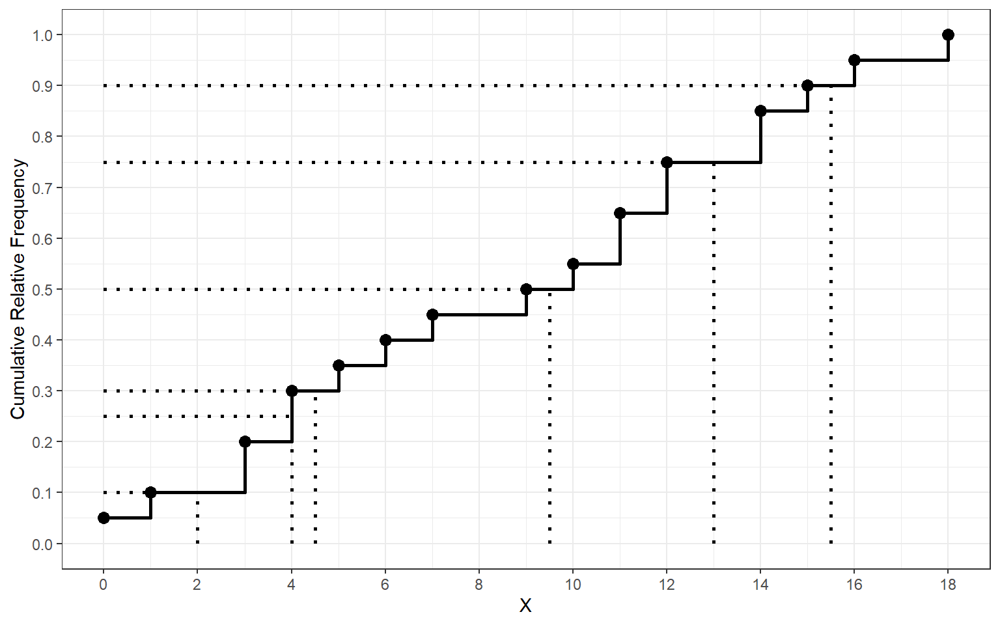
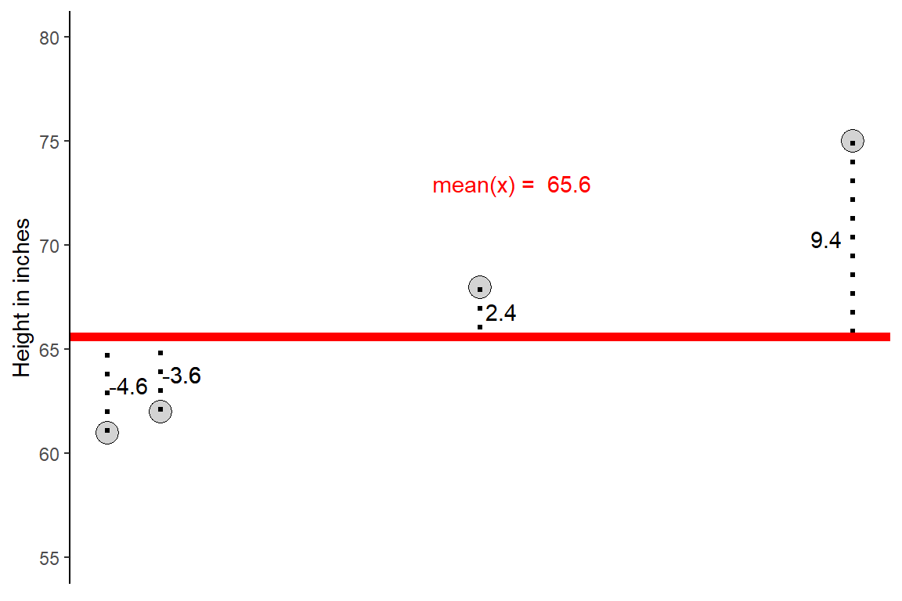
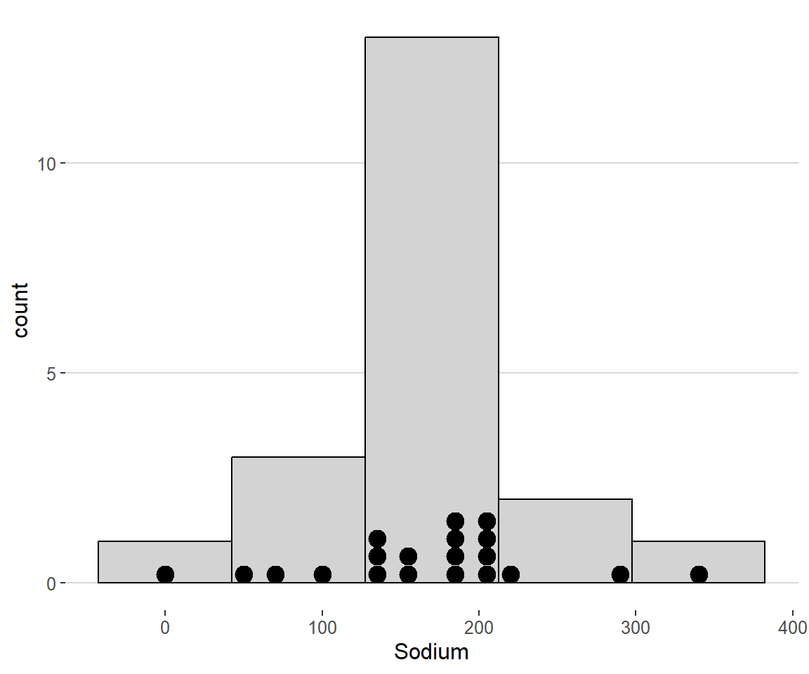

Another form of the distribution of a variable is called the cumulative distribution. The cumulative distribution shows the relationship between the value of a variable and the cumulative relative frequency. For discrete variables, the cumulative distribution can be represented as a step function.
| Cereal | Sodium | Sugar | Type |
|---|---|---|---|
| Frosted Mini Wheats | 0 | 11 | A |
| Raisin Bran | 340 | 18 | A |
| All Bran | 70 | 5 | A |
| Apple Jacks | 140 | 14 | C |
| Cap’n Crunch | 200 | 12 | C |
| Cheerios | 180 | 1 | C |
| Cinnamon Toast Crunch | 210 | 10 | C |
| Crackling Oat Bran | 150 | 16 | A |
| Fiber One | 100 | 0 | A |
| Frosted Flakes | 130 | 12 | C |
| Froot Loops | 140 | 14 | C |
| Honey Bunches of Oats | 180 | 7 | A |
| Honey Nut Cheerios | 190 | 9 | C |
| Life | 160 | 6 | C |
| Rice Krispies | 290 | 3 | C |
| Honey Smacks | 50 | 15 | A |
| Special K | 220 | 4 | A |
| Wheaties | 180 | 4 | A |
| Corn Flakes | 200 | 3 | A |
| Honeycomb | 210 | 11 | C |
| X | Frequency | Cumulative Relative Frequency |
|---|---|---|
| 0 | 1 | 0.05 |
| 1 | 1 | 0.10 |
| 3 | 2 | 0.20 |
| 4 | 2 | 0.30 |
| 5 | 1 | 0.35 |
| 6 | 1 | 0.40 |
| 7 | 1 | 0.45 |
| 9 | 1 | 0.50 |
| 10 | 1 | 0.55 |
| 11 | 2 | 0.65 |
| 12 | 2 | 0.75 |
| 14 | 2 | 0.85 |
| 15 | 1 | 0.90 |
| 16 | 1 | 0.95 |
| 18 | 1 | 1.00 |


The five number summary is not the only numerical summary of a distribution. More commonly, a statistical description of a variable will include the mean as a measure of center and the standard deviation as a measure of spread. The standard deviation measures how far observations are from the center of a distribution. We denote the sample standard deviation as \(s\) and the population standard deviation as \(\sigma\).
The distance between a given observation and the center (i.e the mean) is call the deviation. A deviation can be represented mathematically as \(x_i - \bar{x}\) where \(x_i\) denotes an observation from the sample or population. Every observation in a sample or population has a deviation from the mean.
Example: Consider the height (in inches) of a sample of five college students from the University of Idaho and their deviations
\[ X = \{61,62,62,68,75\} \]

Before we can discuss how to compute the standard deviation of a variable we must first discuss its variance. The variance of a distribution is the sum of squared deviations of the observations in a sample from their mean. We represent the variance of a sample with the symbol \(s^2\) and the variance of a population with \(\sigma^2\). The sample variance is defined mathematically as:
\[s^2 = \frac{1}{n-1}\sum_{i = 1}^n (x_i - \bar{x})^2 = \frac{(x_1 - \bar{x})^2 + (x_2 - \bar{x})^2 + \cdots (x_n - \bar{x})^2}{n-1}\]
From the variance, the standard deviation becomes very easy to compute as is it simply the square root of the variance:
\[ s = \sqrt{s^2} = \sqrt{\frac{1}{n-1}\sum_{i = 1}^n (x_i - \bar{x})^2}\]
The idea behind variance and standard deviation as measures of spread is straight forward. The deviations \(x_i - \bar{x}\) tell us how dispersed the observations are about their center. Some of the deviations will be positive values and some will be negative because some values fall above and below the value of the mean, respectively. In fact, the sum of all deviations will be zero
\[\sum_{i = 1}^n x_i - \bar{x} = 0\]
squaring the deviations ensures that all of the distances are positive. As a result large deviations will have large positive values. The variance is the average squared deviation, so the standard deviation is a measure of the average deviation/distance that an observation falls the center of a distribution. Both \(s^2\) and \(s\) will be large if the observations are very spread out and will be very small if the observations are densely clustered around the mean.
Example: Compute the variance and standard deviation the height (in inches) of a sample of five college students from the University of Idaho
\[ X = \{61,62,62,68,75\} \]
The mean of this sample is \(\bar{x} = 65.6\)
\[s^2 = \frac{(61-65.6)^2+(62-65.6)^2+(62-65.6)^2+(68 - 65.6)^2+(75-65.6)^2}{5-1} = 35.3\]
and now we can take the square root to find the standard deviation
\[s = \sqrt{35.3} \approx 5.9\]
\[ X = \{ 61,62,62,68,75,92\} \]
Now the mean is \(\bar{x} = 70\). The variance and standard deviation become
\[s^2 = \frac{(61-70)^2+(62-70)^2+(62-70)^2+(68-70)^2+(75-70)+(92-70^2}{5-1} = 144.4\]
and now we can take the square root to find the standard deviation
\[s = \sqrt{144.4} \approx 12.01\]
As we can see, the presence of this large, positive outlier has doubled the value of the standard deviation

What is the largest positive deviation in this dataset? How does this deviation compare to the standard deviation of the entire dataset?
The largest deviation belongs to the cereal Rasin Bran which has a sodium content of 340 mg. It’s deviation is \(340 - 167 = 173\). The standard deviation for the whole dataset is about 77mg. This indicates that Rasin Bran has a much higher sodium content than majority of the cereal brands in this dataset.
You might have asked yourself “why is the variance divided
by \(n-1\) and not \(n\)?”
Recall that the sum of deviations is aways zero. Thus the last deviation can always be found once we know the other \(n-1\) deviations. Take for example a set of two observations \(X = \{-5, 5\}\). The mean is \(0\) and the deviations are also \(-5\) and \(5\). If we only knew one of the deviations, say -5, then we know that the other deviation must be 5 for their sum to be zero. This means that for any sum of deviations we are not averaging \(n\) unrelated things but \(n-1\). The last observation is always related to the sum of previous observations. Thus only \(n-1\) observations are allowed to vary freely.
We call \(n-1\) the degrees of freedom of the variance or standard deviation. This word comes up often in statistics. Another way to think about this quantity is that it represents the number of pieces of independent information that we have. When we estimate quantities from the sample, we use up degrees of freedom. When we compute the variance or standard deviation we must first use up a degree of freedom to estimate the mean. This leaves only \(n-1\) degrees of freedom for the remaining estimate of the standard deviation or variance.